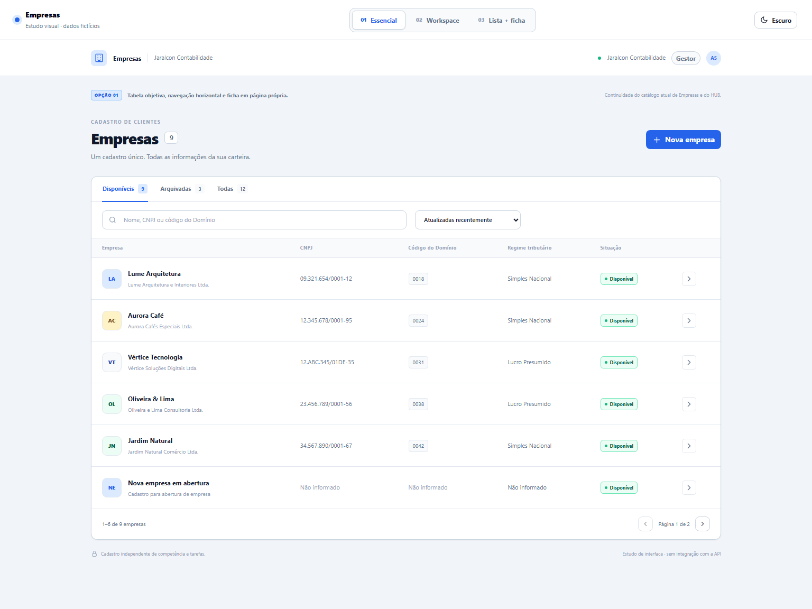

01
Catálogo essencial
Próximo do catálogo atual e do HUB
Um catálogo direto, com foco na tabela. A ficha abre em uma página própria; a busca e os filtros ficam preservados ao voltar.
Explorar opção 1 →